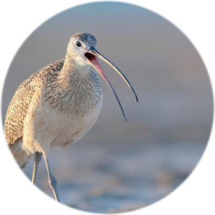
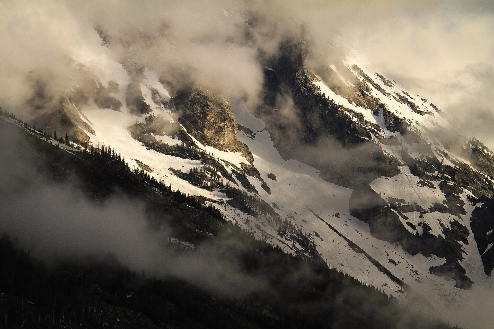
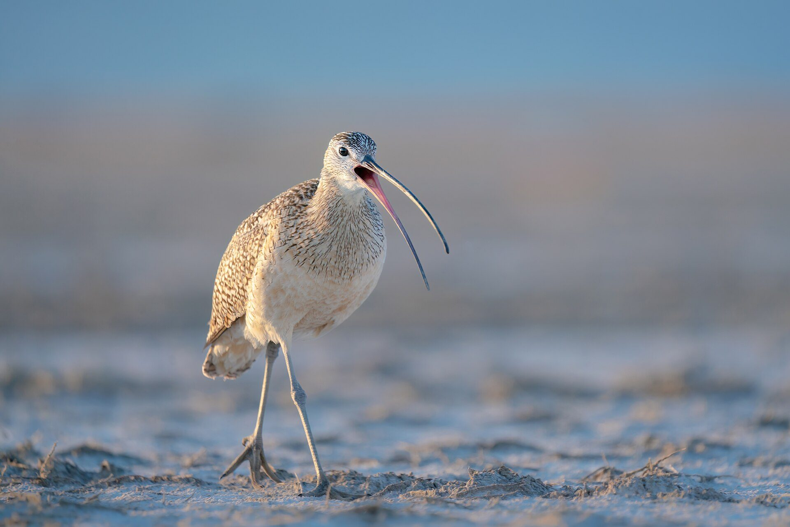
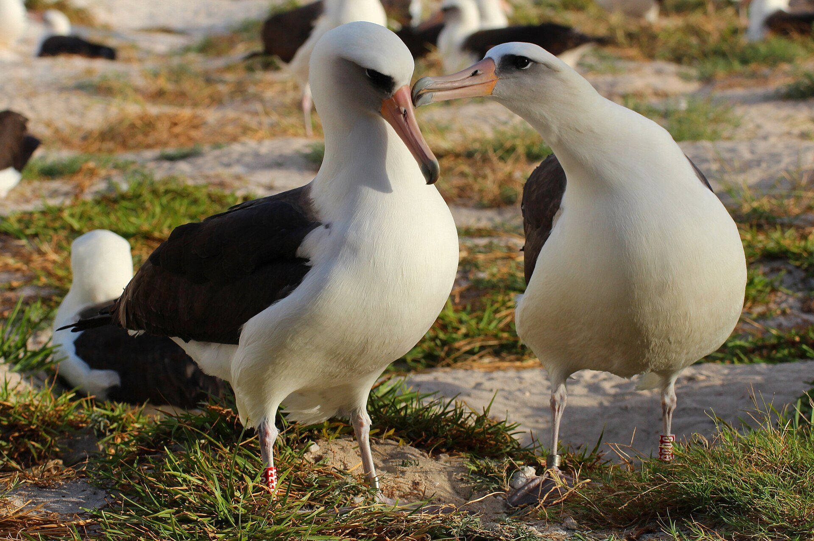
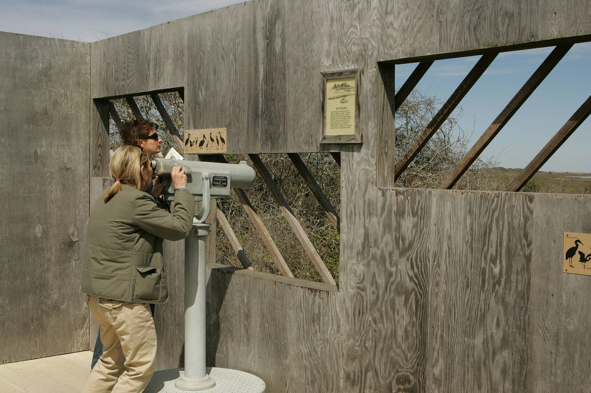
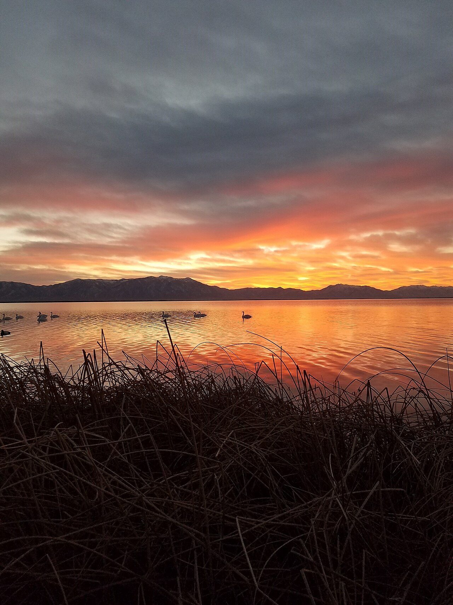
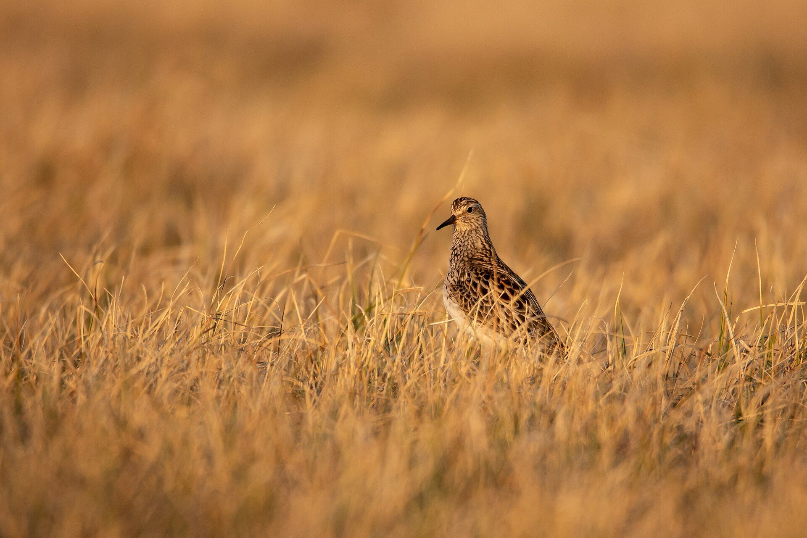

Field trip reportTwenty-two members set off in the dark on the first of April, with flasks, three spotting scopes and a printed list of every bird anyone had ever reported from the lake. We came back with forty-one species, a dozen rolls of film's worth of photographs on our phones, and a new respect for the people who keep the visitor centre's feeders full through the winter.
The weather was against us for the first two days. Cloud sat on the mountains and rain came across the water in curtains, so we spent most of the first afternoon in the hide at the north end, which turned out to be the best decision of the week. A pair of trumpeter swans worked the reeds for an hour in front of us, close enough to hear them grumbling to each other.
On the third day the cloud lifted, and so did the birds. By lunchtime we had added sandhill cranes, a merlin hunting low over the sage, and a flock of more than three hundred American pipits that rose from the meadow all at once and settled again as if nothing had happened. Our youngest member, aged nine, found the trip's only long-eared owl by asking why that branch had eyes.
The highlight, for most of us, came on the last evening. Standing on the dike with the sun going down, we heard the call before we saw the bird: the long rising whistle of a long-billed curlew, back from the coast for the summer. It flew over us, landed in the wet grass a hundred metres away and started feeding as if it had never left.
Thank you to everyone who came, to the visitor centre staff, and to Dale, who drove the bus, never once complained about stopping for a hawk on a fence post, and has asked to come again next year.
The committee is already planning a trip to the coast in early autumn, when the shorebirds are heading south. If you would like to help, see the members' corner on page 4.

Members sent in 1,184 records this quarter, our highest total since the club began collecting them on paper cards in 1987. Most came through the online form, but we still receive a handful of postcards every month, and we still enter every one of them by hand.
The headline is good news. Long-billed curlews returned to the valley eleven days earlier than the average of the last twenty years, and the first breeding pair was reported on the old airfield on the twenty-third of March. Numbers of wintering swans were also up, helped by a mild February that kept the river free of ice.
Not every trend points the same way. Counts of meadowlarks fell for the fourth year running, and the regional survey team has asked clubs across the state to record every singing male they hear between April and June. Details of how to take part are in the box below.
| Species | Records | Change |
|---|---|---|
| Long-billed curlew | 64 | ▲ 38% |
| Trumpeter swan | 211 | ▲ 12% |
| Sandhill crane | 148 | ▲ 5% |
| Western meadowlark | 37 | ▼ 21% |
| Northern harrier | 52 | 0% |
| American pipit | 96 | ▼ 9% |
Walk the same route once a fortnight between April and June, stop every 500 metres for three minutes, and write down every meadowlark you hear. Send your sheets to the records officer; blank forms are on the club noticeboard.
As always, thank you to everyone who sent records. Every card and every form adds to a picture of the valley that now stretches back forty years, and that picture is only as good as the people who fill it in.

At our February meeting, our guest speaker told the story of Wisdom, a Laysan albatross first fitted with a leg band at Midway Atoll in the Pacific in 1956. She was already an adult then, which makes her the oldest known wild bird in the world. Decades later she is still coming back to the same island to nest, after flying, by one estimate, millions of kilometres over the ocean.
Albatrosses pair for life and take turns on the nest while the other partner feeds at sea, sometimes for weeks at a time. They can sleep on the wing, glide for hours without a single flap, and smell food on the water from kilometres away. Our speaker's advice for anyone hoping to see one: be patient, bring a good coat, and learn to love boats.
The talk raised £214 for the seabird recovery programme. Thank you to everyone who bought a raffle ticket, and congratulations to the winner of the albatross jigsaw puzzle, which has one thousand pieces and, we are told, at least nine hundred of them blue.

After three years of fundraising and one very long planning meeting, the town council has agreed to let us replace the old hide at the north marsh. The new one will have a ramp for wheelchairs and pushchairs, viewing slots at two heights, and a fixed scope that children can reach.
We need volunteers for four building weekends in June. No experience is needed, only gloves and good humour; the club will provide tools, lunch and an expert carpenter who has promised to teach anyone who asks how to cut a joint that does not wobble.
Dawn chorus walk. Meet at the church gate at 5:30. Breakfast at the café afterwards for anyone still awake.
Beginners' morning. Binoculars to borrow, and nobody minds how many times you ask what that brown bird was.
Evening talk: moths. With a live trap demonstration in the car park after dark.
First building weekend at the north marsh. Sign up with the volunteer coordinator.


This season's competition had a record thirty-four entries. The judges chose this quiet portrait of a pectoral sandpiper, almost hidden in the grass, because, in their words, “it rewards anyone who takes the time to look”. Entries for the summer competition close on the last day of June; the theme is “water”.
To the editor: I was delighted to see the barn owl box on the cover of the winter issue. I am pleased to report that the box in my orchard, built at the November workshop, now has a resident. She hisses at me every morning and I could not be happier. — A grateful member
To the editor: Could the club consider a second beginners' morning on a weekday, for those of us who work weekends? — A shift worker The committee replies: Yes. See the events list for dates once they are confirmed.
Membership:Individual £12Family £18Junior £4
The Curlew is written and edited by volunteers. Opinions are the writers' own. The Millbrook Valley Naturalists and everyone named in this newsletter are invented for a sample document.